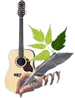

Карта сайта
Песни бардов | Авторская песня
На сайте собрана любимая мною коллекция бардовских песен. Исполнителям авторских песен удалось передать в своих песнях удивительным образом лучшие устремления человека, его истинное предназначение, а также красоту нашей Земли, самого человека и его отношения к ней.